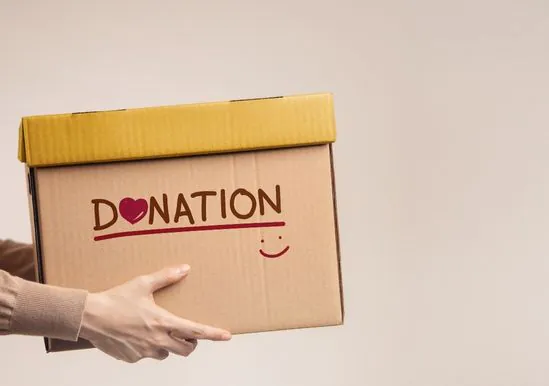
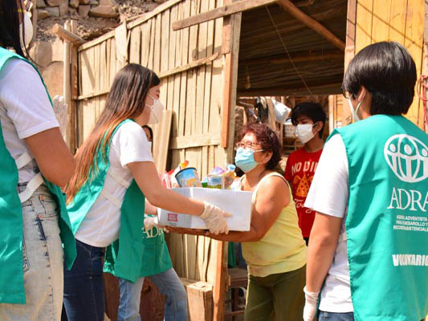

Formas de Ayudar

Donaciones
Apóyanos económicamente para seguir ayudando a más comunidades. Cada donación cuenta.
Donar Ahora

Voluntariado
Únete a nuestro equipo y trabaja directamente con comunidades para hacer un impacto positivo.
Unirme
Comparte
Ayúdanos a llegar a más personas compartiendo nuestro trabajo en tus redes sociales.
Compartir